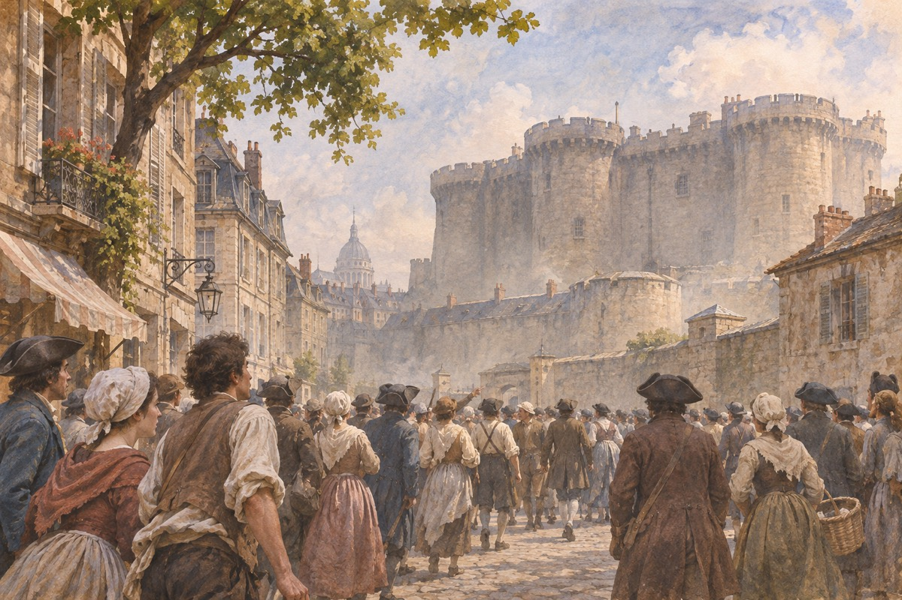
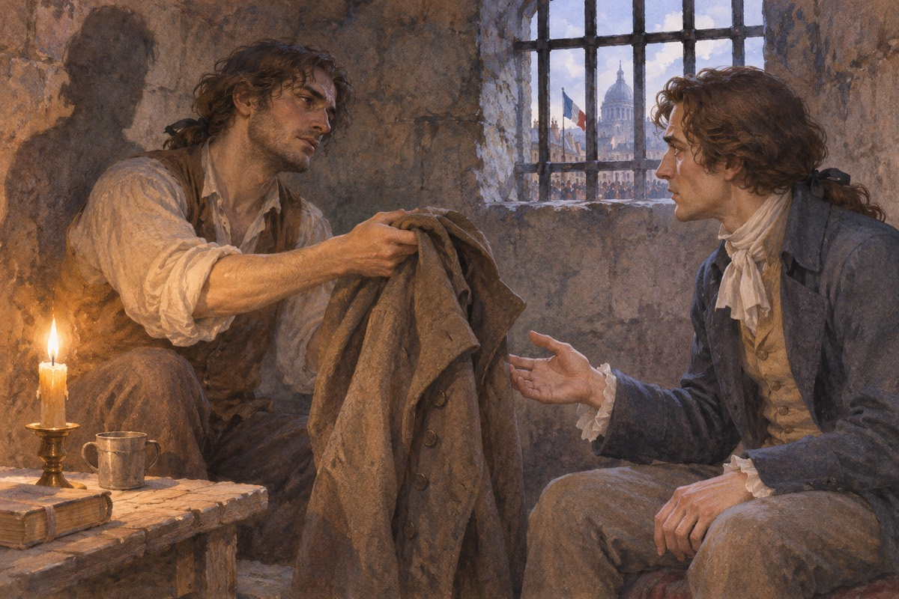
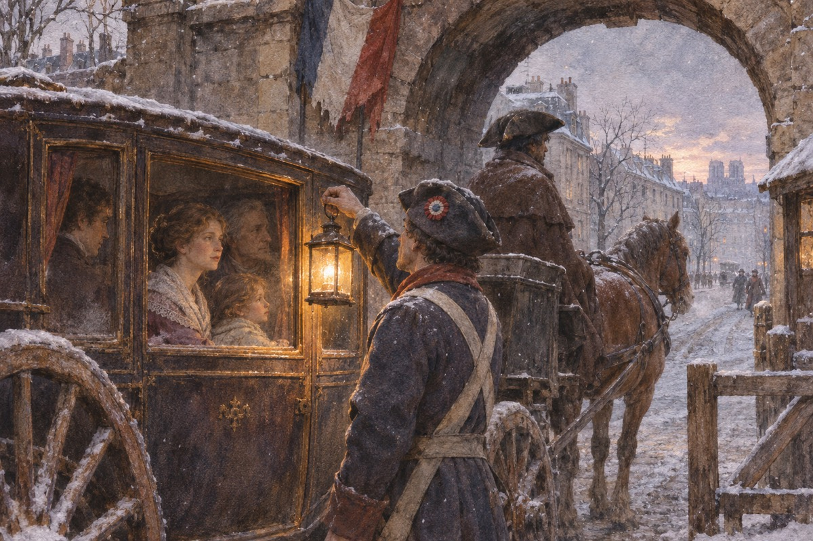
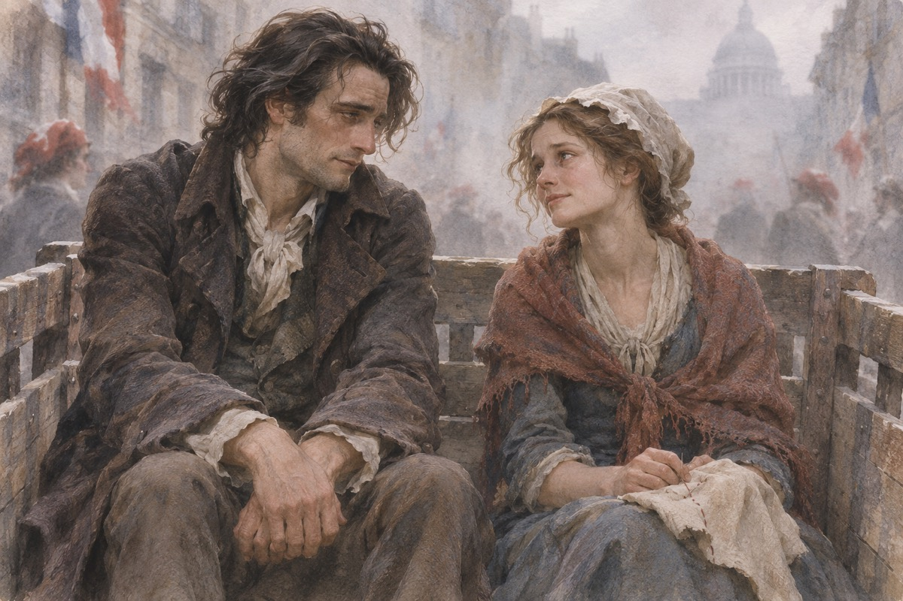

医生被带到庄园
两名埃夫雷蒙兄弟把曼内特医生带到一处乡间住所，为一对遭他们迫害的农民姐弟诊治。两名病人先后死去。曼内特试图向当局告发，之后被秘密囚入巴士底狱。他后来把经过写在牢中的手稿上，直到达尔内受审时，读者才看到完整证词。
出处 · 第三卷第10章〈阴影的实质〉
酒店
德法热在圣安东尼区开一家小酒店，门口挂着一块破招牌。地窖里有一张椅子，他常一个人坐在那儿，看着外面的街。他的妻子坐在柜台后面织毛衣，一针一针，从不抬头。十八年了，他们等的那一天还没到。这一年，一个叫贾维斯的英国银行职员带着一个年轻姑娘来到巴黎，要把一个「已经死了」的人接走。德法热太太织毛衣的时候不看针。她的手指自己会动，一针接一针，织出一行一行的名字。有人问她织什么，她说：织东西。她这辈子只做两件事：记名字，和等。她的丈夫不问她织什么，因为他知道。他们结婚的时候，她已经把那份名单记在心里了。
一百零五号
他们爬上楼梯，打开一间锁着的屋子。屋里有个白发老人，坐在一张矮凳上做鞋，手很稳。他抬起头，看见来人，问：你叫什么名字。姑娘说：露西。他说：露西。他把这个名字念了三遍，然后哭了。他被关了十八年，出狱的时候已经不会说话，只会做鞋。他记得自己的编号：一百零五号，北塔。老人做鞋的时候不看人。他的手很稳，穿针、拉线、敲钉子，一下都不差。露西跪在他旁边，说：爸爸，我们回家。他说：回家。他把这两个字念了一遍，像在学一门外语。劳瑞站在门口，把眼镜摘下来擦了擦。他后来在信里写：我这一辈子做过很多事，那天做的最对。

叛国罪
一个法国青年被控向法国泄露英国军情，罪名成立就是绞刑、剖腹、分尸。旁听席上坐着露西和她的父亲。证人是两个伪君子，一个说看见他在海边画地图。辩护律师斯特里弗有个助手，叫卡顿，一直低着头看天花板。他突然递了一张纸条上去。案子翻了。散庭后，那个法国青年叫查尔斯·达尔内。巴塞德是控方的证人，一个瘦高的男人，说话带着鼻音。他说他看见被告在海边画要塞的图。斯特里弗问他：你怎么知道那是要塞。他说：我看得出来。卡顿在下面说了一句：你连自己站的地方都看不出来。旁听席笑了。法官敲了敲桌子。这个细节后来救了达尔内的命。
一杯酒
卡顿带达尔内去一家小酒馆，要了两瓶酒。他喝得很快，话很少。他说：你知道我为什么救你吗。达尔内说：不知道。他说：因为我不在乎你死不死。他说：我这一辈子，做过的最像样的事，可能就是今天。他把头埋在手里，说：我恨你，因为你能让她看着你。达尔内没有说话。卡顿说：你这种人，生下来就有人爱你。他说：我不是。我生下来的时候，我父亲就把我送去寄宿学校，一年见一次。他说：我这一辈子，唯一一次觉得自己有用，是今天在法庭上。他把酒喝完，说：你别谢我。你谢我，我就更难受。达尔内坐在那儿，一句话也没说。
求婚
达尔内向露西求婚，先去找了曼内特医生。医生说：你爱她，我知道。我只提一件事：你为什么要隐瞒你的姓。达尔内说：因为我父亲的家族做过一些事，我不想让那个姓跟着我。医生说：那就别告诉我。等你哪天想说，再说。他说这话的时候，脸色很白。医生说：我在这间屋子里住了很多年，我女儿是我唯一的东西。他说：你要带走她，我不拦。但我要你答应我一件事：如果有一天你想告诉她你姓什么，先告诉我。达尔内说：为什么。医生说：因为我有一个毛病，我听到某些名字，会想起一些事。他说这话的时候在笑，笑得很轻。
婚礼那天
婚礼在一个安静的早上举行。达尔内对医生说：我要告诉你我的真名。医生说：不用。达尔内说：我必须。他俯在医生耳边，说了一个姓。医生手里的杯子掉在地上，碎成几片。他弯下腰去捡，手抖得捡不起来。婚礼照常进行。当天晚上，医生一个人在地下室里坐了一夜。那个姓是埃夫雷蒙。医生在婚礼上一直很镇定，举杯、致辞、亲吻女儿。客人走了以后，他回到自己的房间，把门锁上。第二天早上，露西来敲门，他说：我没事，我只是有点累。他从那以后又开始做鞋，每天晚上做一双，做完就放在床底下。
侯爵被杀
埃夫雷蒙侯爵的马车碾死加斯帕尔的孩子，侯爵扔下一枚金币便离开。当天晚些时候，侄儿达尔内在乡间宅邸与他争执并表明不愿承继家族做法。侯爵当夜被刺，凶手是死去孩子的父亲加斯帕尔。
出处 · 第二卷第7–9、15章
巴士底狱
七月十四日，巴士底狱被攻下来。德法热冲进北塔，找到一百零五号牢房，把墙上的石头一块块抠下来，取出一卷手稿。他把手稿收进怀里，走出监狱。街上的人在烧东西、在跳舞、在把贵族吊上路灯。德法热太太站在人群里，手里还在织毛衣，织的是名单。德法热在牢房里点了一支蜡烛，把那卷手稿摊在膝盖上，一个字一个字地读。他读了两个小时，读完把手稿卷起来，塞进怀里。他走出巴士底狱的时候，太阳正在升起，街上的人还在欢呼。他站在台阶上，看着那些人，忽然觉得他们什么都不知道。

一封旧信
达尔内在伦敦收到一封信，是他家在法国的旧仆加贝尔写的。信上说：我被抓了，他们要我抵命，只有你能救我。达尔内没有告诉妻子，一个人去了巴黎。他一进城就被抓了，罪名是「逃亡贵族」。他站在牢里想：我来的时候，以为自己是来救人的。他走的时候给妻子留了一封信，说：我去处理一件旧事，一个月就回。他把信放在餐桌上，用一个杯子压着。露西看到信的时候，他已经上了船。她抱着女儿坐在窗前，坐了整整一天。曼内特医生说：他会回来的。她说：爸爸，你当年也是这么说的。
医生的名字
曼内特医生带着女儿赶到巴黎。他在这座城市里有一个别人没有的东西：他蹲过巴士底狱。革命者把他当成英雄，管他叫「一百零五号」。他去见每一个能说话的人，用了八个月，把达尔内从死牢里救出来，改成软禁。露西每天在窗边站着，希望有人看见她。医生去见了每一个能说话的人：法官、议员、旧相识、当年给他看过病的人。他不用钱，也不用关系，他只用一样东西：他是那个从巴士底狱活着出来的人。有人握着她的手说：医生，你受苦了。他说：我不是来诉苦的。我是来求你们放一个人。
审判
达尔内被带上革命法庭。检察官念了一堆罪名，全是空话。曼内特医生站起来，说他无罪。陪审团看了他胸前那枚徽章——那是他坐牢十八年的证明——然后判了无罪。人群欢呼，把达尔内抬起来送回家里。那天晚上，他们吃了一顿很久没有吃过的晚饭。那天晚上他们吃了炖鸡、面包和一壶酒。劳瑞说：这是我这几年吃得最好的一顿。小露西坐在父亲腿上，说：爸爸，你以后还走吗。达尔内说：不走了。他说完看了妻子一眼。露西在桌子底下握住他的手，握得很紧。窗外的街上有人在唱歌，唱的是革命歌曲。
第二次被捕
第二天，达尔内又被抓了。这次告他的是三个人：德法热、德法热太太，还有一个是医生自己。德法热从巴士底狱的墙里取出的那卷手稿被当庭宣读。那是医生十八年前写的控诉书，写的是埃夫雷蒙兄弟怎么害死那对兄妹，怎么把他关进监狱。手稿最后一句是：我控诉他们，和他们的后代，直到最后一个。手稿念到最后，法庭里没有人动。医生坐在证人席上，嘴唇发白。他十八年前写这封信的时候，想的是控诉，不是报仇。他没有想到，有一天这封信会用来杀他的女婿。他站起来，说：是我写的，可我请求你们，不要用它。法官说：先生，法律不看你请求不请求。
判决
法庭里没有人说话。法官问：被告有什么话说。达尔内说：我娶了医生的女儿，我爱她。旁听席上有人哭了。判决是死刑，二十四小时内执行。露西倒在她父亲怀里。医生站起来，说：我救过他一次，我还能救他。可是他看着自己写的那份手稿，一句话也说不出来。露西跪在法庭的地上，抱着父亲的腿。卡顿从旁听席走下来，把她扶起来。他说：太太，请你相信我。她说：你能做什么。他说：我能做一件我这一辈子唯一想做的事。他走出法庭，外面在下雨。他站在雨里，抬头看着天，看了很久。
一个决定
卡顿在巴黎。他听见判决，一个人在街上走了半夜。他去过一个药铺，买了一样东西。然后他去看露西，说：你要相信我，我能让他活着。露西说：你怎么做。他说：别问。她抓住他的手，说：你会不会有危险。他说：不会。他说这句话的时候在笑。药铺的老板问他：先生，这个量会死人的。他说：我知道。老板说：你要小心。他说：我会的。他把那个小瓶子放进内袋，走出药铺。他在街上买了两个面包，坐在河堤上吃完，然后把剩下的碎屑撒给鸟。他这辈子第一次觉得，天是亮的。
德法热夫妇的分歧
德法热太太坚持把追究埃夫雷蒙家的报复延伸到达尔内的妻女。她透露自己是早年遭埃夫雷蒙兄弟迫害的那一家的幸存者。德法热对再追究曼内特和露西有所迟疑，夫妻两人在报复的边界上出现分歧。
出处 · 第三卷第12章〈黑暗〉
曼内特再度失语
达尔内获判死刑后，曼内特试着利用自己在革命者中的声望救他。失败后，他再次陷入旧日囚禁留下的精神创伤，向身边的人索要做鞋的工具。卡顿判断一家人必须尽快离开，并请劳瑞预备通行文件和车辆。
出处 · 第三卷第12章〈黑暗〉
达尔内留给妻子的信
等死的达尔内给露西写信，解释他何以长久没有告诉她自己放弃的姓氏，请她照料父亲和女儿。他也向劳瑞交代自己的事务。写信时他仍以为会死，并不知道卡顿已准备把他带出监狱。
出处 · 第三卷第13章〈五十二个〉
换衣服
卡顿带着一张通行证进了监狱。他让达尔内跟他换衣服，说：你出去，去找一辆马车，坐到门口等。达尔内说：你疯了。他说：我这一辈子没做过一件好事，就让我做这一件。他把达尔内推出去，说：快走，别回头。达尔内回头看了一眼，看见他坐在桌前，拿起笔在写什么。巴塞德在监狱里当看守，卡顿早就抓住了他的把柄。卡顿说：你帮我这一次，我什么都不说；你不帮，我就把你以前在英国做的事全说出去。巴塞德说：你会被砍头。卡顿说：我知道。巴塞德看了他很久，说：你疯了。他说：也许。他把外套脱下来，递给达尔内。

出城
马车在城门口被拦下。士兵上车看了看，看见曼内特医生、露西、小露西、劳瑞先生，还有一个昏睡的男人。士兵说：证件。劳瑞递上去。士兵看了很久，说：走吧。马车出了城，露西握着那个男人的手，一直握到天亮。她不知道那只手不是她丈夫的。出城以后，劳瑞问：他怎么样了。露西说：他睡着了。她低头看着怀里的人，说：他好久没有睡得这么沉了。曼内特医生看着窗外，一句话没说。他知道那个人不是他的女婿，因为他的女婿从来不会这样安静。他没有说破。他只是把外套盖在那个人身上。

普罗斯小姐
德法热太太去了露西住过的房子，想看看还有谁在。屋里只有一个女人：普罗斯小姐，露西的保姆，一个胖胖的、说话很冲的英国女人。德法热太太说：我要找她。普罗斯小姐说：她不在这儿。德法热太太往前走了一步，普罗斯小姐从怀里掏出一把枪。枪响了。普罗斯小姐说：你不能带走她。德法热太太说：我不是来带她走的。她说：我是来看看，一个英国女人怎么把一个法国女人的家占了。普罗斯小姐说：这个家不是你的。德法热太太往前走了一步，说：所有的家都是我们的。普罗斯小姐掏出了那把枪。
织毛衣的人
德法热太太倒在地上。普罗斯小姐站在那儿，手还在抖。她后来一个人坐在屋里，等到天亮，然后锁上门，走了。警察来的时候，只看见一具尸体和一个打翻的织筐。那些织了一半的名字散在地上，有一个名字是她自己的。德法热那天晚上在监狱外面等到天亮，没有等到妻子。德法热那天晚上在监狱外面站了很久。他手里拿着一张纸，上面写着一个名字，是他妻子让他带来的。天亮的时候，有人告诉他：你妻子死了。他站在那儿，把那张纸慢慢折起来，放进怀里。他后来再也没有织过毛衣，也再也没有提过她的名字。
囚车上的缝衣女工
随卡顿一起前往刑场的缝衣女工认出他不是达尔内，明白他自愿代人赴死。她请求在赴刑途中握住他的手，好给自己一点勇气。两人谈起她还在世上的表妹，直到轮到她走上断头台。
出处 · 第三卷第13、15章

卡顿随她走上断头台
缝衣女工先于卡顿受刑。卡顿俯身亲吻她、向她道别，随后平静地走向断头台。叙述转述旁观者当时注意到的安详神情。从达尔内身上换下来的那件衣服，此时已将本该死的两个人置于不同的命运。
出处 · 第三卷第15章〈脚步声永远停歇〉
行刑时未说出的未来
小说以叙述者的假设结束：倘若卡顿能把临终的想法说出来，而且这些话能够预见未来，他会看见巴黎在暴力之后重建，看见露西一家安稳地生活、以他的名字纪念他。他也会把这次牺牲视为一生中最值得做的事。
出处 · 第三卷第15章末的假设叙述